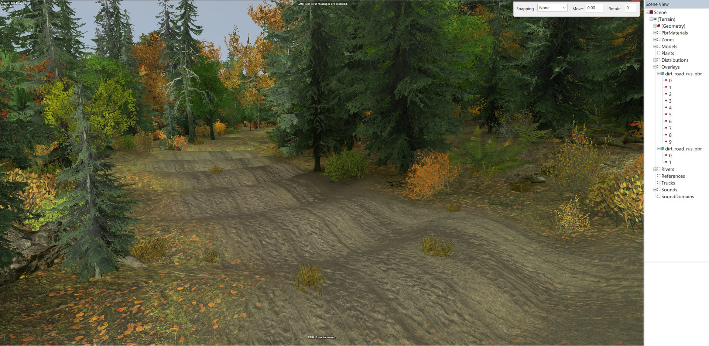

This is the biggest single time sink for a new map maker: sculpting roads into the heightmap by hand when the editor has a road tool.
A road in Expeditions is an Overlay: a curve you draw across the map, carrying a road surface that drapes over the ground underneath. documented The same tool lays railway track, pipes and wires. You do not dig a road. You lay one, and then decide how much it should reshape the ground it sits on.
Expeditions is an off-road game, and Saber notes that ordinary road overlays are
used much less here than in SnowRunner. The game does ship Expeditions-specific
ones such as animal_tracks, cracked_mud and log_road.
documented
Digging roads by hand goes badly
Excavating a road into the heightmap produced a bare scar on a sidehill.
Forcing a drivable gradient across 150 m of relief moved 30 m of earth,
which leaves a cliff wherever the cut meets untouched ground.
measured
Laying an overlay#
- Right-click the terrain, or the Overlays node in the Scene View, and choose Add Overlay.
- Double-click a road type in the window that opens. The overlay appears with
two points, numbered from
0. - To add points, select one, right-click it and choose Add after or Add before.
- Move a point with the arrows, or type its Position X and Position Y.
- Set the width at each point: drag sideways from the point’s centre, or type a Width.
- Rebuild Terrain to see the final result. Parts of an overlay outside the camera’s view may not update until you do.
documented
The toolbar’s Hide all nodes of rivers and overlays hides the red point markers when they get in the way. Keep Change rotation basis off while you work on points: Saber warns that it blocks selecting individual overlay points. documented
What an overlay is on disk#
The editor saves each overlay as its own file,
Media\prebuild\<map>\data\Overlay\Overlay_<ID>.xml. This one was written by the
editor itself: measured
<Overlay Type="dirt_road_rus_pbr" Flatten="false" ApplyOffset="true"
Brushes="" Id="2753CAF01DF1" isInvisible="false">
<Curve>
<Node Position="(413.9551; 349.81213)" Width="7" EraseSnow="true" />
</Curve>
</Overlay>
Two details matter if you ever write one with a script:
- The points sit inside a
<Curve>element. River points do not. Positionhas two numbers, x and z. There is no height. The road follows whatever ground is under it, which is the whole reason it is the right tool.
Positions are in metres from the centre of the map, so on a full-size map they
run from -1008 to +1008. x runs along the heightmap’s columns and z along its
rows. measured
Two defaults are backwards#
A fresh overlay comes with two settings that suit an abandoned track, not a road you mean to drive.
| setting | default | what it does | for a graded road |
|---|---|---|---|
| Flatten | false |
when true, levels the ground across the road’s width | set true |
| ApplyOffset | true |
deliberately adds ruts, bumps and rises, depending on the road type | set false |
documented
Leave ApplyOffset on where you want a rough, rutted track. Turn it off where you want a road.
Both need a Rebuild Terrain before you see their effect. documented
What Flatten does and does not do#
Flatten removes cross-slope: no more road tilted from one edge to the other. It does not level the road along its length. Saber is explicit that the road may stay uneven lengthwise. documented
Flatten also does not change the heightmap. The levelling is applied when the terrain is built, so your height tiles are untouched. documented
That has a practical side effect. Once the camber is gone, the only thing left varying is the lengthwise profile, so any hump along the road becomes easier to feel. measured
One road surface per terrain block#
The engine can draw only one textural overlay, a road painted onto the
ground, in each 24 m terrain block. Put two road types in one block and part of
one of them can vanish. documented
Left-click the terrain and a red cube marks the block’s border. Textural and non-textural overlays can share a block, so a road plus wires is fine.
To join two road types:
- keep the main run of each road in its own blocks
- in the junction, paint the ground with a terrain material that uses a similar texture as one of its layers
- or hide the junction under mud or snow
documented
The simplest answer is often one road type for the whole map.
Where the humps come from#
On a road network that drove in game, the driver reported large humps, worst on the switchbacks. Every overlay already had Flatten on and ApplyOffset off, so neither setting was the cause. Measuring them found measured:
- 12 of 16 humps sat within 15 m of the end of an overlay, six of them right on the end point.
- The likely reason: Flatten levels each overlay to its own centre line. Where two overlays meet, the two levelled surfaces are worked out separately, do not agree, and the join is a step.
That suggests drawing a continuous road as one overlay where you can, and inspecting every place two overlays meet. unverified The link between the joins and the humps is a measured pattern; the mechanism has not been confirmed.
What the humps look like. An overlay road through forest on real terrain; the ripples across it are the humps a driver feels.

Do not smooth a switchback with a round brush
The two legs of a hairpin are close together on the map and far apart along
the road. Averaging the ground inside a circle mixes them. Measured on one
descent: 42 points had other road within 14 m that was more than 42 m
away along the road, with up to 14.2 m of height difference inside one
circle. Smoothing that way doubled the humps from 16 to 34.
measured
Smooth along the road, point by point down its length.
Grade once, not repeatedly
A grading pass that works out its target from the ground it just moved chases its own output. Repeated passes went from 9 humps to 18, 27 and 31. Take one pass, measure, stop. Take one untouched snapshot before you start, because a tool that overwrites its own backup each pass loses the original. measured
The humps that remained matched real features in the original survey data, already about six times smoother than the raw hillside. Those need a deliberate cut at each spot, not more smoothing. measured
When to sculpt as well#
The overlay paints the road and, with Flatten on, levels it across. It does not build a bench into a hillside, and it does not even out the length of the road. Sculpt as well when:
- the road crosses a sidehill. It needs a cut-and-fill bench, or it drapes over the slope. Real survey terrain usually has the bench already; see real-world terrain.
- there is a hump along the road. A Smooth brush will not touch it, because
Smooth leaves anything longer than about
5 malone. Cut it deliberately. See the brushes. - the road descends steadily. The hand Flatten brush levels to one height, so a graded bench down a hill is a job for a script.
Keep any reshaping small: capped near 3 m, as in how terrain
works. And route roads low on the map, where the height format is
most precise.
Measuring grade#
Measure grade over about 15 m of road. Over half a metre, the height format’s
smallest step alone reads as a steep slope. measured
Hand-drawn alignments on invented terrain measured 101% and 160% grade at
their worst, because a line drawn on a map cannot see the slope it crosses.
measured Check a road’s profile before you
drive it.
Planning routes you do not want to show#
Set IsInvisible to true on any overlay and, after a rebuild, it disappears from the game and the editor. It still exists. The toolbar’s Show all overlays highlights it in blue so you can edit it. This is useful for marking planned routes through forests or rivers on a map with no visible roads. documented
Other overlay settings#
- Brushes places objects along the overlay, such as lamp posts. Spacing comes
from the brush definitions in
initial.pak, at[media]\classes\editor\brushes.xml. documented - Do not put points very close together on overlays that are 3D geometry rather
than a road surface. Saber warns this can crash.
documented Hand-built roads that load were
measured with points about
11to20 mapart. measured
Road types seen in the editor include arizone_dirt_road_01, dirt_road_can,
dirt_road_rus_pbr, dirt_road_snowy, log_road, log_road_narrow,
cracked_mud, animal_tracks_rus_01 to 03, asphalt_road_double_pbr and
iron_road_abandoned. measured
With the toolkit#
make_overlays.py writes a road network as overlay files with Flatten on,
ApplyOffset off and one road type. fetch_trails.py does the same from real
trails mapped in OpenStreetMap. road_profile.py measures the humps along every
road, so a fix can be checked. Each one dry-runs unless you add --apply.
python make_overlays.py level_<name> --type dirt_road_rus_pbr --width 7
python fetch_trails.py level_<name> <lat> <lon>
python road_profile.py <name>
road_profile.py takes the map name without the level_ prefix. Close the map
in the editor before a script writes files. That rule is proven for terrain
tiles; that overlay files behave the same way is assumed, not tested.
unverified
Read Saber’s pages first; this returns all nine of them:
python wiki.py howto road
Not yet known#
- The steepest grade a loaded truck can reliably climb on a custom map has not been measured.
- Whether overlay joins can be made seamless in the editor alone, without a grading script.